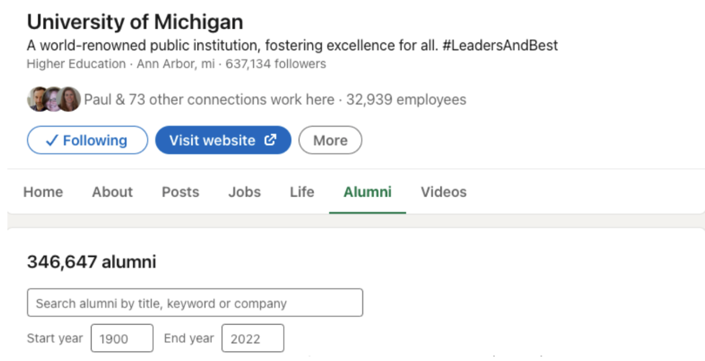

Building a Strategic Networking Plan
Building a strategic networking plan at UMSI is all about taking charge of your connections and turning them into opportunities. Whether you’re meeting classmates, alumni, or industry professionals, having a plan helps you approach networking with confidence and purpose. Think of it as your personal roadmap for making meaningful relationships that can guide your learning, open doors, and shape your career journey.
Where to Find Alumni
CDO Resources
- UMSI LinkedIn Group | UMSI Alumni Tool
- CareerLink (employer contacts)
- UCAN
- Alumni Career Connections (see CareerLink for event details)
- Networking or recruiting events (see CareerLink for event details)
Your network: UMSI & beyond
- Friends and peers (your own personal network)
- Faculty, supervisors, mentors (your own professional network)
- LinkedIn search

Use the University of Michigan LinkedIn Alumni tool to find alumni by location, company, and job title.
Get a Response!
Don’t get discouraged by low response rate - average response rate to “cold messages” is around 20%. Each contact you connect with is an important and valuable addition to your network!
Goal: get a response
- Phone call
- Zoom/Video meeting
- In-person meeting
- Email communication
Do's and Dont's
Do
- Keep it short: demonstrate that you respect their time
- Establish a time frame: it’s easier to say yes to 20 minute coffee chat in the next 2 weeks than an undefined time commitment
- Personalize the message: convey your respect & value for them as an individual
Don't
- Do NOT ask for any information that is readily available online
- NEVER send your resume first. Always ask for permission
- Do NOT begin by asking for a referral - build the relationship first
- NEVER ask for a job!